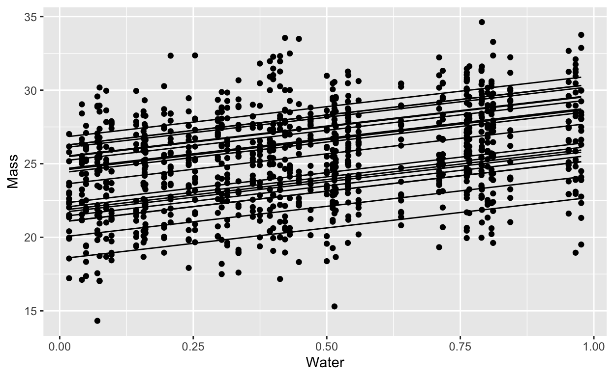

How much do groups contribute to variance in a response? Using posterior simulations to get a simple (?) answer.
How much variation is contributed by group differences? This is a useful question in several contexts. Sometimes it is simply a guide to model building is it worth it to include group effects in my model? In other projects we might care about measuring variation explicitly. For example, we might want to measure what proportion of phenotypic variation can be ascribed to different genotypes. Or we might have different experimental subjects, and we want to know if the same subject responds in the same way across trials.
Clearly, observations from the same subject will be correlated to each other, since all those observations come from the same person/animal/thing, which differs in all kinds of unmeasured ways from the other people/animal/things we are studying. This correlation is measured, for some models, using the interclass correlation coefficient (ICC). The trouble is that the ICC:
Here Im suggesting an approach to calculate the ICC based on a Bayesian posterior distribution for the model coefficients. The approach is heavily based on the Bayesian R2 (Gelman et al. 2019). The approach Im suggesting replaces a single value of ICC with a distribution. However, for models beyond simple intercept-only models, this ICC calculation produces a curve, \(\text{ICC}(x)\), because in these cases the contribution of group effects depends on the rest of the model.
Below is a quick description of what Im suggesting followed by some simulations testing it in a few interesting cases.
The ICC is the proportion of total variation that comes from group differences. The simplest and most intuitive formula comes from a gaussian model with random intercepts, like this one:
\[ \begin{align} y_i &\sim \text{Normal}(\mu_i, \sigma_{obs}^2) \\ \mu_i &= \alpha_0 + X_i\beta+ \alpha_{\text{group}[i]} \\ \alpha_{\text{group}} &\sim \text{Normal}(0, \sigma_{\text{group}}^2) \end{align} \]
That is, a gaussian response with random intercepts for groups. In this case, \(X_i\beta\) could be any vector of predictors, multiplied by their coefficients.
Here, the ICC is a ratio of the hyperparameter \(\sigma_{\text{group}}^2\) to sum of that hyperparameter and the residual variance, \(\sigma_{\text{obs}}^2\).
\[ \frac{\sigma_{group}^2}{\sigma_{group}^2 + \sigma_{obs}^2} \]
Since all variation in the above model comes from one of these two places, the result is the proportion of variation which comes from group differences.
The idea for an ICC based on simulations is inspired by the Bayesian R^2 equation of (Gelman et al. 2019), which is also explained in this excellent workbook by Gelman, Hill and Vehtari:
\[ R^2 = \frac{\text{Var}_\mu}{\text{Var}_\mu + \text{Var}_{\text{res}}} \]
Here \(\mu\) is the model fitted values:
\[ \text{Var}_\mu^s = V_{n=1}^N\mu_n^s \]
We also need the residual variance. To make it general, we use the expected residual variance like this:
\[ \text{Var}_{\text{res}}^s = \frac{1}{N}\sum_{n=1}^N (\text{Var}_{\text{res}})_n^s \]
In words: for every posterior draw \(s\), get the variance for each observation \(n\) and average them. In a gaussian regression with a constant variance you would of course get a constant:
\[ \frac{1}{N}\sum_{n=1}^N (\text{Var}_{\text{res}})_n^s = \frac{1}{N}\sum_{n=1}^N (\sigma^2)^s = (\sigma^2)^s \]
But thats not true for example in a logistic regression (this is the example given in the workbook linked above), where the mean and the variance have a close relationship. If the mean for observation number \(n\) in draw \(s\) is \(\pi_n^s\), then:
\[ \frac{1}{N}\sum_{n=1}^N (\text{Var}_{\text{res}})_n^s = \frac{1}{N}\sum_{n=1}^N \pi_n^s(1-\pi_n^s) \]
In this calculation, we look at the variance across the models fitted values and combine it with the expected variance for each fitted value.
The approach Im suggesting is basically the same equation in two dimensions. The recipie goes like this:
\[ \text{ICC}(x = m) = \frac{ V_{k=1}^K(\mu_m)_k^s }{ V_{k=1}^K(\mu_m)_k^s + \frac{1}{K}\sum_{k=1}^K (\text{Var}_m^{\text{res}})_k^s } \]
What this snarled notation is meant to convey is: We can calculate the ICC in a very similar way to the bayes \(R^2\) value. In this case, instead of calculating the variance across the \(X_n\) observations, we calculate the variance across the \(k\) groups for some particular value of \(x\), say when \(x = m\).
\((\mu_m)_k^s\) is the expected value of the model when \(x=m\), for group \(k\) and posterior draw \(s\). For the model above this would be:
\[ (\mu_m)_k^s = \alpha_0^s + m\times\beta^s+ \alpha_{\text{group }k}^s \]
Where \(m\) is one particular value for \(x\). In all the models Ive tried this on so far, theres been a single univariate \(x\) value1. By calculating the variance across \(k\) values of \((\mu_m)_k^s\), we get an estimate of how much groups contribute to overall variation at \(x = m\), according to posterior draw \(s\).
Residual variance, \(\text{Var}_m^{\text{res}}\), is one constant number for any gaussian regression in a particular posterior draw \(s\). For most (all?) other regressions, it will typically be some function of \(m\). For example, in a logistic regression it would be \(\mu_m(1-\mu_m)\).
In these cases it will also be a function of the group offsets, and so each group \(k\) will have its own residual variance. There might even be a model where residuals differ among groups (i.e.groups which are more or less predictable, with a greater or smaller variance). Because each of the \(K\) groups will have its own variance in these cases, we take the average.
The goal of the rest of this document is to experiment with this calculation of \(\text{ICC}(x)\). First Ill compare it to previous means of calculating ICC, then extend it to cases where that calculation isnt possible.
Everything is based on simulated data.
In the notes below Ill refer to three kinds of ICC calculation:
rptR package.Imagine a simple experiment: different genetic lines of the same plant are each exposed to different amounts of water. Their growth is normally distributed around an average determined by how much water they get. The different genetic lines are different in their growth but all respond precisely the same way to the addition of water:
water <- runif(50)
avg_size <- 23
ecart_size <- rnorm(20, mean = 0, sd = 3)
slope_water <- 4.2
obs_sd <- 2
obs_data <- expand_grid(sp_id = 1:20,
water) |>
mutate(avg = avg_size + ecart_size[sp_id] + slope_water*water,
obs = rnorm(length(avg), mean = avg, sd = obs_sd))
obs_data |>
ggplot(aes(x = water, y = obs)) +
geom_point() +
geom_line(aes(y = avg, group = sp_id)) +
labs(x = "Water", y = "Mass")

How much of the variation in growth is contributed by plant lines? In other words, what proportion of total variance comes from genetic differences? We can apply the formula above by manually extracting the variance components from the model:
lmer_mod <- lmer(obs~water + (1 | sp_id), data = obs_data)
gauss_vc <- VarCorr(lmer_mod) |> as.data.frame()
freq_line <- gauss_vc$vcov[[1]]/(gauss_vc$vcov[[1]] + gauss_vc$vcov[[2]])
freq_line
[1] 0.6057147We can do the same with the rptR package (Stoffel, Nakagawa, and Schielzeth 2017)
rpt_obs <- rpt(obs ~ water + (1 | sp_id),
data = mutate(obs_data, sp_id = factor(sp_id)),
grname = "sp_id", datatype = "Gaussian", nboot = 0, npermut = 0)
rpt_obs
Repeatability estimation using the lmm method
Repeatability for sp_id
R = 0.606
SE = NA
CI = [NA, NA]
P = 2.37e-179 [LRT]
NA [Permutation]As noted by (Nakagawa and Schielzeth 2010):
The advantage of using a Bayesian implementation such as MCMCglmm for estimating precisions, is that MCMC samples from the posterior distribution of the parameters (e.g. 2 and 2 e ) can be combined (e.g.according to Eq. 22) to provide a valid posterior distribution for repeatability itself []
So we can repeat the procedure above, but this time using posterior samples from the parameters. This gives us a distribution which we could use to obtain HPDI intervals or summarize in some other way.
The first step is to fit a bayesian model:
gaussian_intercept_bf <- bf(obs~ water + (1 | sp_id),
family = gaussian())
# get_prior(gaussian_intercept_bf,
# data = obs_data)
gaussian_intercept_priors <- c(
prior(exponential(.3), class = sigma),
prior(exponential(.2), class = "sd"),
prior(normal(5, 6), class = "b"),
prior(normal(50, 10), class = "Intercept")
)
gaussian_brm <- brm(gaussian_intercept_bf,
prior = gaussian_intercept_priors,
data = obs_data, file = "gaussian_brm",
backend = "cmdstanr", cores = 4)
gaussian_brm <- update(gaussian_brm, newdata = obs_data, cores = 4, refresh = 0)
Running MCMC with 4 parallel chains...
Chain 4 finished in 7.0 seconds.
Chain 1 finished in 7.5 seconds.
Chain 2 finished in 8.1 seconds.
Chain 3 finished in 8.2 seconds.
All 4 chains finished successfully.
Mean chain execution time: 7.7 seconds.
Total execution time: 8.5 seconds.The following creates the \(K\) groups for each posterior sample. I visualize one sample just to show that (1) they look just like the original groups (2) theres a lot of them. At this stage it is absolutely critical if you are using brms that you set the option sample_new_levels = "gaussian". All this and more is described in Andrew Heisss fabulous blog on the topic
sample_draws <- expand_grid(sp_id = paste0("newsp", 1:100),
water = unique(obs_data$water)) |>
add_epred_draws(gaussian_brm,
allow_new_levels = TRUE,
sample_new_levels= "gaussian")
sample_draws |>
ungroup() |>
filter(.draw == 121) |>
ggplot(aes(x = water, y = .epred, group = sp_id)) +
geom_line(alpha = .3) +
theme_bw()
(#fig:posterior_k_gauss)100 simulated groups from a single posterior sample of the hyperparameter \(\sigma_{\text{group}}^2\)
IMPORTANT The next step is one that I tested a few times and I hope is valid. We need to match the average predictions from add_epred_draws to the \(\sigma_{\text{res}}\) values from those exact same draws. I think that this works ie that if you take ALL the posterior draws (not using the ndraws argument) then the numbers of the draws match. If so, then the data frames can be merged together.2
sample_variance <- sample_draws |>
ungroup() |>
nest_by(.draw, water) |>
mutate(Vpred = var(data$.epred))
sigma_draws <- spread_draws(gaussian_brm, sigma)
icc_of_x <- sample_variance |>
ungroup() |>
left_join(sigma_draws, by = ".draw") |>
mutate(icc_x = Vpred/(Vpred + sigma^2))
Finally, with this merged dataframe, we can calculate the Bayesian simulation approach (\(\text{ICC}(x)\)) and compare it to the Bayesian analytic option (\(\text{ICC}_B\)) and the frequentist point estimate (\(\text{ICC}_F\))
# get_variables(gaussian_brm)
gaussian_varcomp <- gaussian_brm |>
spread_draws(sd_sp_id__Intercept, sigma)
gaussian_varcomp |>
mutate(icc_analytic = sd_sp_id__Intercept^2/(sd_sp_id__Intercept^2 + sigma^2)) |>
ggplot(aes(x = icc_analytic)) +
geom_density(lwd = 2) +
geom_density(data = icc_of_x, aes(x = icc_x), col = "orange", lwd=2) +
geom_vline(xintercept = freq_line, col = "darkgreen", lwd=2) +
theme_bw() +
labs(x = "ICC")
Figure 1: Comparison of three ways of calculating the ICC. The vertical green line is the frequentist point estimate. The black curve is the posterior distribution obtained by applying the formula to posterior samples of the hyperparameter and parameter. The orange curve is the simulation based approach for 100 simulated groups.
The pattern is quite similar, which is encouraging! If \(\text{ICC}(x)\) gives the same answer as the other two, then it might be a useful tool. It is FAR more computationally demanding, but it is also much more flexible.
In the following sections there are no more comparisons to \(\text{ICC}_B\) or \(\text{ICC}_F\), because (as far as I know) its not possible to calculate them for any of these models.
water <- runif(50, min = -1, max = 1)
avg_size <- 23
avg_eff_water <- 7
corrmat <- matrix(
c(1,-.8,
-.8, 1), nrow = 2, byrow = TRUE
)
sds <- c(1,4)
vcov <- diag(sds) %*% corrmat %*% diag(sds)
b <- MASS::mvrnorm(20, mu = c(0, 0), Sigma = vcov)
obs_sd <- 1
obs_data <- expand_grid(sp_id = 1:20,
water) |>
mutate(avg = avg_size + avg_eff_water*water + b[sp_id,1] + b[sp_id,2]*water,
obs = rnorm(length(avg), mean = avg, sd = obs_sd))
obs_data |>
ggplot(aes(x = water, y = obs)) +
geom_point(alpha = .6) +
geom_line(aes(y = avg, group = sp_id)) +
labs(x = "Water", y = "Mass")
Fit a bayesian model and plot the ICC(x)
gaussian_slope_bf <- bf(obs~ 1+ water + (1 + water | sp_id),
family = gaussian())
get_prior(gaussian_slope_bf,
data = obs_data)
prior class coef group resp dpar nlpar
(flat) b
(flat) b water
lkj(1) cor
lkj(1) cor sp_id
student_t(3, 23.3, 4.9) Intercept
student_t(3, 0, 4.9) sd
student_t(3, 0, 4.9) sd sp_id
student_t(3, 0, 4.9) sd Intercept sp_id
student_t(3, 0, 4.9) sd water sp_id
student_t(3, 0, 4.9) sigma
bound source
default
(vectorized)
default
(vectorized)
default
default
(vectorized)
(vectorized)
(vectorized)
defaultgaussian_slope_priors <- c(
prior(exponential(.3), class = sigma),
prior(exponential(.5), class = "sd"),
prior(lkj(2), class = "cor"),
prior(normal(5, 6), class = "b"),
prior(normal(20, 10), class = "Intercept")
)
gaussian_slope_brm <- brm(gaussian_slope_bf,
prior = gaussian_slope_priors,
data = obs_data, file = "gaussian_slope_brm",
backend = "cmdstanr", cores = 4)
gaussian_slope_brm <- update(gaussian_slope_brm, newdata = obs_data, cores = 4, refresh = 0)
Running MCMC with 4 parallel chains...
Chain 2 finished in 44.9 seconds.
Chain 1 finished in 45.5 seconds.
Chain 3 finished in 46.0 seconds.
Chain 4 finished in 46.4 seconds.
All 4 chains finished successfully.
Mean chain execution time: 45.7 seconds.
Total execution time: 46.7 seconds.calculate ICC(x)
gauss_slope_sample_draws <- expand_grid(sp_id = paste0("newsp", 1:100),
water = seq(from = -1, to = 1, length.out = 33)) |>
add_epred_draws(gaussian_slope_brm,
allow_new_levels = TRUE,
sample_new_levels= "gaussian")
gauss_slope_sample_draws |>
ungroup() |>
filter(.draw == 121) |>
ggplot(aes(x = water, y = .epred, group = sp_id)) +
geom_line(alpha = .3) +
theme_bw()
gauss_slope_sample_variance <- gauss_slope_sample_draws |>
ungroup() |>
nest_by(.draw, water) |>
mutate(Vpred = var(data$.epred)) |>
select(-data)
sigma_draws <- spread_draws(gaussian_slope_brm, sigma)
gauss_slope_icc_of_x <- gauss_slope_sample_variance |>
ungroup() |>
left_join(sigma_draws, by = ".draw") |>
mutate(icc_x = Vpred/(Vpred + sigma^2))
gauss_slope_icc_of_x |>
ggplot(aes(x = water, y = icc_x)) +
stat_lineribbon() +
scale_fill_brewer(palette = "Greens", direction = -1) +
labs(y = "ICC(x)", x = "Water")
Figure 2: The ICC(x) for a random slopes model. In this case, the variation explained by groups is lowest in the middle of the gradient of X, and highest at the extremes.
# rates vary slightly
log_mean_rate <- log(0.7)
log_indiv_ecart <- rnorm(15, mean = 0, sd = .4)
rates <- exp(log_mean_rate + log_indiv_ecart)
## NORMAL OBS -----------------------------------
## observations are normally distributed
sd <- 5
M0 <- 200
simulated_decay <- expand.grid(sample_id = 1:15, time = 0:10) |>
mutate(rate = exp(log_mean_rate + log_indiv_ecart[sample_id]),
Mt = M0 * exp(-rate*time),
obs_mass = rnorm(length(Mt),
mean = Mt,
sd = sd))
simulated_decay |>
ggplot(aes(x = time, y = Mt, group = sample_id))+
geom_line()
data_figure <- simulated_decay |>
ggplot(aes(x = time, y = Mt, group = sample_id))+
geom_line() +
geom_point(aes(y = obs_mass))
## brms mdeol
decay_normal_bf <- bf(obs_mass ~ 200*exp(-exp(rate) * time),
rate ~ 1 + (1 | sample_id), nl = TRUE, family = gaussian())
#get_prior(decay_normal_bf, data = simulated_decay)
decay_normal_priors <- c(
prior(exponential(.3), class = sigma),
prior(exponential(.2), class = sd, nlpar = "rate"),
prior(normal(-.5, .5), class = "b", nlpar = "rate")
)
decay_brm <- brm(decay_normal_bf,
prior = decay_normal_priors,
data = simulated_decay,
file = "decay_normal",
backend = "cmdstanr",
cores = 4, refresh = 0)
decay_brm <- update(decay_brm, newdata = simulated_decay, cores = 4, refresh = 0)
Running MCMC with 4 parallel chains...
Chain 3 finished in 3.7 seconds.
Chain 4 finished in 3.6 seconds.
Chain 2 finished in 3.9 seconds.
Chain 1 finished in 4.0 seconds.
All 4 chains finished successfully.
Mean chain execution time: 3.8 seconds.
Total execution time: 4.2 seconds.#### make fake groups
new_groups <- paste0("s", 1:33)
sample_draws <- expand_grid(sample_id = new_groups,
time = seq(from = .1,
to = 10,
length.out = 40)) |>
add_epred_draws(decay_brm,
allow_new_levels = TRUE,
sample_new_levels= "gaussian")
sample_draws |>
ungroup() |>
filter(.draw<5) |>
ggplot(aes(x = time, y = .epred, group = sample_id)) +
geom_line() +
facet_wrap(~.draw)
# for each draw, at each value of x,
# calculate the variance of the predictions
sample_variance <- sample_draws |> ungroup() |>
nest_by(.draw, time) |>
mutate(Vpred = var(data$.epred))
sigma_draws <- spread_draws(decay_brm, sigma)
icc_of_x <- sample_variance |>
ungroup() |>
select(.draw,time, Vpred) |>
left_join(sigma_draws, by = ".draw") |>
mutate(icc_x = Vpred/(Vpred + sigma^2))
icc_figure <- icc_of_x |>
ggplot(aes(x = time, y = icc_x)) +
stat_lineribbon() +
scale_fill_brewer(palette = "Greens", direction = -1) +
labs(y = "ICC(x)", x = "Time")
library(patchwork)
data_figure + icc_figure
alpha <- 50
log_mean_rate <- log(0.7)
log_indiv_ecart <- rnorm(15, mean = 0, sd = .7)
simulated_decay_gamma <- expand.grid(sample_id = 1:15, time = 0:10) |>
mutate(rate = exp(log_mean_rate + log_indiv_ecart[sample_id]),
Mt = 200 * exp(-rate*time),
obs_mass = rgamma(length(Mt),shape = alpha, rate = alpha/Mt)) |>
mutate(sample_id = paste0("samp", sample_id))
# replace 0s with smallest nonzero
tinymass <- with(simulated_decay_gamma, min(obs_mass[obs_mass>0]))
simulated_decay_gamma <- simulated_decay_gamma |>
mutate(obs_mass = if_else(obs_mass == 0, tinymass, obs_mass))
gamma_data_figure <- simulated_decay_gamma |>
ggplot(aes(x = time, y = Mt, group = sample_id ))+
geom_line() +
geom_point(aes(y = obs_mass))
decay_gamma_bf <- bf(
obs_mass ~ 200*exp(-exp(rate) * time),
rate ~ 1 + (1 | sample_id),
nl = TRUE,
family = brmsfamily("Gamma",
link = "identity",
link_shape = "log")) +
lf(shape ~ 1)
#get_prior(decay_gamma_bf, data = simulated_decay_gamma)
decay_gamma_priors <- c(
prior(exponential(4), class = "sd", nlpar = "rate"),
prior(normal(-.5, .5), class = "b", nlpar = "rate"),
prior(normal(4, 1), class = "Intercept", dpar = "shape")
)
decay_gamma_brm <- brm(decay_gamma_bf,
prior = decay_gamma_priors,
data = simulated_decay_gamma,
file = "decay_gamma_brm",
backend = "cmdstanr", cores = 4,
sample_prior = "yes", refresh = 0)
decay_gamma_brm <- update(decay_gamma_brm,
newdata = simulated_decay_gamma,
cores = 4, refresh = 0)
Running MCMC with 4 parallel chains...
Chain 2 finished in 47.6 seconds.
Chain 4 finished in 50.4 seconds.
Chain 1 finished in 50.1 seconds.
Chain 3 finished in 51.2 seconds.
All 4 chains finished successfully.
Mean chain execution time: 49.8 seconds.
Total execution time: 52.0 seconds.decay_epred_draws <- expand_grid(time = seq(from = .1,
to = 10,
length.out = 40),
sample_id = letters) |>
add_epred_draws(decay_gamma_brm,
allow_new_levels = TRUE,
sample_new_levels= "gaussian")
# calculate the variance among groups for each value of x (here x is time)
decay_var_epred <- decay_epred_draws |>
ungroup() |>
nest_by(.draw, time) |>
mutate(Vpred = var(data$.epred))
# get the shape.. first what was it called
# decay_gamma_brm |> get_variables()
shape_draws <- spread_draws(decay_gamma_brm, Intercept_shape)
# stancode(decay_gamma_brm)
# need to exponentiate the shape draws as well!
decay_gamma_mu_shape <- decay_var_epred |>
ungroup() |>
left_join(shape_draws, by = ".draw")
# calculate variance and then calculate icc
icc_gamma <- decay_gamma_mu_shape |>
rowwise() |>
# exponentiante shape and divide the square of the mean by that
mutate(shape = exp(Intercept_shape),
mu_sq = list(data$.epred^2),
var_k = list(mu_sq / shape),
mean_var = mean(var_k))
clean_icc <- icc_gamma |>
mutate(icc_x = Vpred/(Vpred + mean_var)) |>
select(time, .draw, icc_x) |>
ungroup()
gamma_icc_fig <- clean_icc |>
ggplot(aes(x = time, y = icc_x)) +
stat_lineribbon() +
scale_fill_brewer(palette = "Greens", direction = -1) +
labs(y = "ICC(x)", x = "Time")
gamma_data_figure + gamma_icc_fig
Figure 3: ICC for an exponential decay model with gamma errors. Because the variance is proportionally smaller than the mean, as the mean goes to 0 it takes the variance with it (but even faster). The result is that soon group ID controls almost all of the variation. This variation however is practically 0, since and this point almost everything has decayed to 0
Two models, each with very comparable structures, give completely opposite ICC(x) curves. Its an interesting consequence of extending the ICC in this way.
Whats this good for? This extension of the classic ICC approach can apply to a much wider range of models, but it is also more complex to interpret. For example, theres no clear way to put a single number on the outcome. For all but the simplest models, it is no longer possible to make a statment like repeatability of this behaviour among animals was 60%. Instead, wed have to say something like repeatability reached a maximum value of 60% (HDPI between 51 and 67%) after 5 days, after which it declined, or the ICC reached a value greater than 90% when water addition increased beyond 60L per m2
Because every quantity from a bayesian model has a posterior distribution, this approach would let us calculate both repeatability and broad-sense heritability (two interpretations of the ICC) for model-derived quantities. For example, we could expose many clonal lines of, say, aphids to different temperatures and measure population growth rates for each line at each temperature. This data could be modelled with thermal performance curves, each of which has several parameters. These parameters would be drawn from a multivariate normal distribution that would describe the variation among genotypes (clonal lines). With the resulting model it would be possible to measure the broad-sense heritability of, say, the temperature at which population growth rates are maximized.